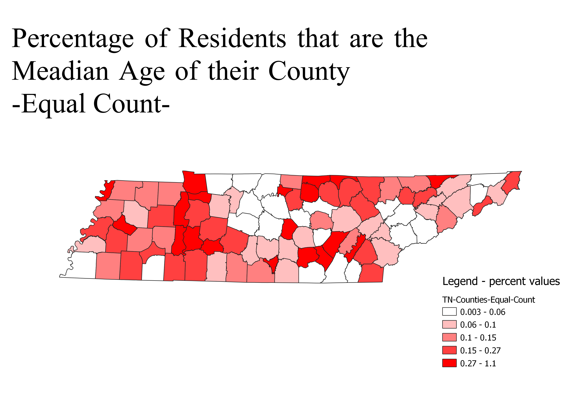

Homework 6 pt. 2: Census data ratios and categories
Emma Gates
My data from part 1 is not a ratio or category. It is a quantitative distribrution measure. Therefore, I could not make this into a ratio. I did however, make a percent. My maps show the percent of people who actually are the median age. It may not show much but it is interesting to see the ammount of perciseness to the median.
Category: Equal Interval

Category: Natural Breaks

Category: Equal Count

Category: Fixed Interval

Data used for this project
CSV dataset
Link to shapefile